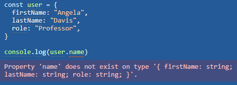

TypeScript
2. Why do we need to use TypeScript?
3. Top features of TypeScript
4. Conclusions
What is TypeScript?
History


TypeScript
In other words, TypeScript is JavaScript plus some additional features.
Why do we need to use TypeScript?
Type checking: This is why typescript really exists. It adds type checking over javascript. It stops you to write stupid code
Gives error at compile time instead of runtime.
OOP principles: Typescript allow you to use object-oriented programming concepts very easily. Like class, interface, inheritance, and so on.
Predictable Code: If you have type checking, then you know where to put what type of data. And which code will return which type of output. You can predict the code and it is very important
Using absolute imports instead relative import
// Relative imports
import User from '../../componets/user'
// Absolute imports
import User from 'componets/user'
Easy to understand: Typescript makes your code a lot easier to read and understand. Because you know what variable is which type and where to use what
TypeScript is fast, simple, easy to learn and runs on any browser or JavaScript engine.
It is similar to JavaScript and uses the same syntax and semantics.
Top features of TypeScript
Data Types
// boolean
let isCompleted: boolean = true;
// number
let counter: number = 5;
// string
let name: string = 'Andrey';
// array
let array: number[] = [5, 10, 15];
// object
let object: object = {
name: 'Andrey'
};
// tuple type
let tuple:[number, string] = [20, 'test']
Data Types
// void
const greeting = (): void => {
console.log('Hello, friend!')
};
// any
let x: any
x = 42;
x = true;
Data Types
// undefined and null
let undefinedName: undefined = undefined;
let nullName: null = null;
// Enum
enum Weather {
Cold = 'cold',
Warm = 'warm'
}
Weather.Cold; // 'cold'
Weather.Cold; // 'warm'
// multiple type
let someValue: string | number;
Interface
interface ITax {
taxpayerId: string;
calculateTax(): number;
}
class IncomeTax implements ITax {
taxpayerId: string;
calculateTax(): number {
return 10000;
}
}
class ServiceTax implements ITax {
taxpayerId: string;
calculateTax(): number {
return 2000;
}
}
Access Modifiers and Properties
class Employee {
private empCode: number;
public empName: string;
}
let emp = new Employee();
emp.empCode = 123; // This will throw an error.
emp.empName = "Swati"; // This will work
Generic type
function getter < T >(items: T): T {
return data
};
let x = getter < number > (5)
let x = getter < string > ('some string')
ReadOnly
class Employee {
readonly empCode: number;
empName: string;
constructor(code: number, name: string) {
this.empCode = code;
this.empName = name;
}
}
let emp = new Employee(10, "John");
emp.empCode = 20; // This will throw an error.
emp.empName = 'Bill';